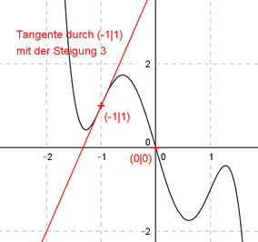

Aufgabe 113 Der Graph einer zu (0|0) punktsymmetrischen ganzrationalen Funktion 5. Grades hat in (-1|1) einen Wendepunkt mit der Steigung 3. Wie lautet seine Funktionsgleichung?  Allgemeine Form einer zu (0|0) punktsymmetrischen ganzrationalen Funktion 5. Grades: f(x) = ax5 + cx3 + ex f(x) = 5ax4 + 3cx4 + e f’’(x) = 20ax3 + 6cx 4 Bedingungen : (eine mehr als nötig) 1. Geht durch (0|0) bedeutet: f(0) = 0 --> a * 05 + c * 03 + e * 0 = 0 --> 0 = 0 liefert kein Ergebnis 2. Hat in (-1|1) einen Wendepunkt bedeutet zum einen: f(-1) = 1 --> a * (-1)5 + c * (-1)3 + e * (-1) = 1 --> -a - c - e = 1 I 3. Hat in (-1|1) einen Wendepunkt bedeutet zum anderen: f’’(-1) = 0 --> 20a * (-1)3 + 6c * (-1) = 0 --> -20a - 6c = 0 II 4. Hat in (-1|1) einen Wendepunkt mit der Steigung 3 bedeutet: f’(-1) = 3 --> 5a * (-1)4 + 3c * (-1)2 + e = 3 --> 5a + 3c + e = 3 III I + III -a - c - e = 1 5a + 3c + e = 3 ---------------- 4a + 2c = 4 IV II + IV * 5 -20a - 6c = 0 20a + 10c = 20 ---------------- 4c = 20 |:4 c = 5 c = 5 in II eingesetzt: -20a - 6 * 5 = 0 -20a - 30 = 0 |+30 -20a = 30 |:(-20) a = -1,5 a = -1,5 und c = 5 in I eingesetzt: -(-1,5) - 5 - e = 1 1,5 - 5 -e = 1 -3,5 - e = 1 |+3,5 -e = 4,5 |:(-19) e = -4,5 Gesuchte Funktionsgleichung: f(x) = -1,5x5 + 5x3- 4,5x